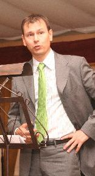
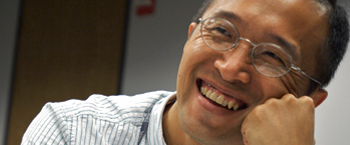

Invited Speakers
- Dr. Brian Gaines
- Dr. Richard Benjamins
- Dr. James Fan
- Dr. Tom Gruber
- Dr. Bill Swartout
- Dr. Bob Wielinga
 |
Dr. Brain R. Gaines, University of Calgary & Victoria Talk title: "Knowledge Capture through the Millennia: From Cuneiform to the Semantic Web" Abstract: As we celebrate 25 years of knowledge capture research we can view it from a short-term perspective as a substantial component of the 60-year development of digital computing technologies, and from a long-term perspective as the most very recent segment of the twelve millennia evolution of recorded knowledge processes that have shaped our civilization. We can trace the development of knowledge capture processes similar to those we now study: from the Neolithic origins of our civilization in the Levant; through the Babylonian development of mathematics and writing; Greek innovations in logic, ontology and science, and their medieval elaboration; the development of formal logics, metaphysical systems and sciences stemming from the scientific revolution; to the computational implementation of knowledge representation, capture, inference and their ubiquitous application in our current information age. This presentation outlines major events in the trajectory of knowledge capture processes over the millennia, focusing on those relevant to where we are now and where we may be going. It segues through: broad models of the evolution of civilization from archeological, economic, socio- cultural and systemic perspectives; highlights in the formalization of knowledge capture processes through the ages; trajectories in the development of knowledge technologies supporting its representation, capture and application; to projections of expected major issues and advances in the next quarter century. Bio: Dr. Brian R Gaines retired to Vancouver Island in 1999 and is currently Professor Emeritus at the University of Calgary and Adjunct Professor at the University of Victoria. He was formerly Killam Memorial Research Professor, Dean of Graduate Studies, Associate Vice President (Research) and Director of the Knowledge Science Institute at the University of Calgary. His previous positions include Professor of Industrial Engineering at the University of Toronto, Technical Director and Deputy Chairman of the Monotype Corporation, and Chairman of the Department of Electrical Engineering Science at the University of Essex. He received his BA, MA and PhD from Trinity College, Cambridge, and is a Chartered Engineer, Chartered Psychologist, and a Fellow of the Institution of Electrical Engineers, the British Computer Society and the British Psychological Society. He founded and edited the International Journal of Human-Computer Studies, the Computers and the People book series, and (together with John Boose) the annual Knowledge Acquisition Workshops, the Knowledge Acquisition Journal (now merged with IJHCS), and the Knowledge-Based Systems book series. He has authored some 500 papers and authored or edited 10 books on a wide variety of aspects of computer and human systems. His research interests include: the socio-economic dynamics of science and technology; the nature, acquisition and transfer of knowledge; software engineering for heterogeneous systems; and knowledge-based system applications in manufacturing, the professions, sciences and humanities. |
|  |
Dr. Richard Benjamins, Telefónica R&D Tentative title: "Has 'Knowledge' been the driver?" Abstract: In this talk I will review the impact of 25 years of research (which started as "Knowledge Acquisition") on society and industry, especially from a European perspective. I will also revisit the value of knowledge versus data and how that has evolved in the last 25 years. Bio: Dr. V.R. (Richard) Benjamins is Director of User Modelling at Telefónica R&D where he is responsible for customer data intelligence. Previously he was Director of Technological Strategy at the same company which he joined in July 2007. Before joining Telefonica, he was director and board member at Intelligent Software Components (iSOCO), which he co-founded in 1999. Dr. Benjamins has held positions at the Technical University of Madrid, the University of Amsterdam, the University of Sao Paulo, Brazil, the University of Paris-South, France, and the Spanish Artificial Intelligence Research Institute in Barcelona. |
|  |
Dr. James Fan, IBM Tentative title: "Building Watson A Brief Overview of DeepQA and the Jeopardy! Challenge" Abstract: A computer system that can answer natural language questions over a broad range of knowledge with high accuracy and confidence has been envisioned by scientists and writers since the advent of computers themselves. Consider, for example, the "Computer" in Star Trek. The DeepQA project at IBM aims to take on this grand challenge by illustrating how the wide and growing accessibility of natural language content and the integration and advancement of Natural Language Processing, Information Retrieval, Machine Learning, Knowledge Representation and Reasoning, and massively parallel computation can drive open-domain automatic Question Answering technology to a point where it clearly and consistently rivals the best human performance. In this talk, we will give an overview of the DeepQA technology and describe how it was used to build Watson, the computer system that won the Jeopardy Man vs. Machine challenge in February 2011. Watson's ability to process and analyze vast amounts of unstructured data has the potential to transform busine |